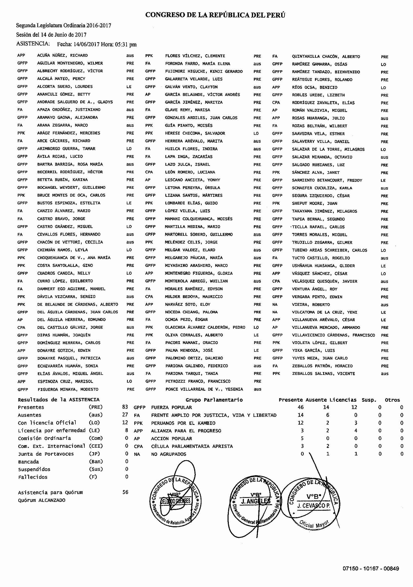

Code
install.packages("rollama")Aunque su creación remonta a la década de 1950, los modelos de lenguaje como el chatGPT han popularizado la inteligencia artificial. Estos modelos, conocidos como modelos de inteligencia artificial generativa, son capaces de generar respuestas coherentes empleando el lenguaje natural. Basta con preguntar, empleando un lenguaje claro y relativamente ordenado, para obtener respuestas que pueden ser sorprendentemente precisas. Además, son capaces de realizar tareas que consumen mucho tempo con textos, como resumir, traducir, etiquetar o extraer información.
Durante esta sección, revisaremos cómo podemos emplear estos modelos para realizar tareas especializadas de análisis. Aprenderemos a dar instrucciones claras a la IA para que pueda llevar a cabo tareas específicas y a evaluar los resultados obtenidos. También veremos cómo podemos emplear estos modelos en nuestro ordenador, sin necesidad de enviar nuestros datos a servidores externos. El próximo apartado se dedica a cómo dar instrucciones a una IA generativa. Parece una tarea sencilla, pero resulta vital para obtener resultados precisos y útiles.
Imagina que los modelos de IA como el chatGPT son como un niño pequeño que necesita instrucciones claras para hacer algo. Cuanto más preciso y claro seas, mejor será el resultado, especialmente cuando se trata de tareas complejas o específicas. La técnica de prompting consiste en un conjunto de estrategias empleadas para dar instrucciones a una IA generativa. Su objetivo consiste en guiar a la IA para que pueda llevar a cabo tareas especializadas como analizar datos o escribir textos para públicos concretos. Durante el curso, emplearemos algunos ejemplos de prompting que te ayudarán a realizar tareas de análisis sencillas, como extraer información de textos o generar resúmenes automáticos.
Los pasos a seguir son los siguientes:
1. Define el “personaje”. La mejor manera de guiar la IA consiste en definir una “persona” que quieres que el modelo asuma. Por ejemplo, si quieres que la IA te ayude a recolectar datos puedes decirle: “Eres un investigador que necesita extraer datos de un conjunto de textos.” Eso ayudará al modelo a asumir una perspectiva especializada. No será cualquier respuesta, sino que intentará simular la posición de un investigador.
2. Describe la tarea. Una vez que hayas definido el “personaje”, debes describir la tarea que quieres que la IA realice. Por ejemplo, si quieres que la IA te ayude a recolectar datos, puedes decirle: “Necesito que extraigas el país de origen, la edad y el sexo de las personas que aparecen en el texto.”
3. Proporciona contexto con ejemplos. Para que la IA pueda entender mejor lo que quieres, es importante que le proporciones ejemplos. Por ejemplo, si quieres que la IA te ayude a recolectar datos, puedes proporcionarle un texto de ejemplo y decirle: “Aquí tienes un texto de ejemplo.”El brasileño Rodrigo, de 47 años, es profesor de ciencia política en la Universidad de Salamanca. Devuélveme: Rodrigo;Brasil;47.”
4. Define el formato de salida. Si quieres que te devuelva los resultados en un formato específico, debes definir cómo quieres que el modelo te entregue los datos. Por ejemplo, puedes decirle: “Devuélveme los datos en un formato csv, separado por ; y con los nombres de las columnas son ‘nombre’ ‘país’ y ‘edad’.” También puedes definir el tono en que el modelo devuelva los resultados. Puede ser un tono formal, informal, técnico o con ejemplos dependiendo de tus necesidades.
5. Incluye restricciones. Si hay alguna restricción que deba tener en cuenta, es importante que se la comuniques a la IA. Por ejemplo, si no quieres que la IA te devuelva datos de personas menores de edad o de ciertos países, debes decírselo.
6. Evalúa los resultados. Una vez que la IA haya completado la tarea, es importante que evalúes los resultados. Si no son los esperados, puedes intentar reformular la tarea o proporcionar más ejemplos para ayudar a la IA a entender mejor lo que quieres.
7. Refina el prompt y vuelve a intentar. Si los primeros resultados obtenidos no corresponden a las necesidades, puedes siempre ajustar y refinar el prompt para obtener mejores resultados. Una vez obtenidos los resultados esperados, puedes automatizar el proceso para que el modelo haga el trabajo por ti.
Resulta importante ser muy claro. A veces, puede ser mejor definir puntos o ítenes que faciliten el entendimiento de la tarea. Utilizar frases cortas y con poca ambigüedad puede ser de gran ayuda. Organizar las instrucciones de forma secuencial y lógica también puede hacer toda la diferencia.
Un ejemplo:
La mayoría de la gente hoy utiliza chatGPT o similares para obtener ayuda en tareas cotidianas como consultas rápidas o resolución de dudas. No obstante, si uno desea emplearlos para tareas más especializadas, como el análisis de grandes volúmenes de datos, dichos modelos pueden traer algunas desventajas importantes. La primera es el coste. Imagina extraer información de miles de archivos pdf. Si bien un modelo de lenguaje como el chatGPT puede hacerlo, el coste de hacerlo puede ser prohibitivo. La segunda desventaja es la privacidad. Si los datos que deseas analizar son sensibles, como datos personales o información confidencial, no es recomendable enviarlos a un servidor externo. Por ejemplo, uno no quiere que su dirección y número de teléfono sean enviados a un servidor externo para ser analizados.
Por eso, la utilización de modelos locales de menor tamaño pueden ser una excelente alternativa. Aunque menos potentes que un chatGPT de última generación, estos modelos pueden realizar bien muchas tareas especializadas, desde que se les proporcione un buen prompt. El R permite el empleo de modelos LLM desde nuestros ordenador a partir del proyecto Ollama y de la librería rollama. Ollama es un proyecto que permite la utilización de modelos de lenguaje en R. A través de la librería rollama, es posible emplear modelos de lenguaje locales en R. El primer paso consiste en instalar Ollama en el ordenador. Para ello, debes visitar https://ollama.com/download para descargar el aplicativo de Ollama adecuado a tu sistema operativo. Una vez descargado, debes instalarlo en tu ordenador. Una vez instalado, deber abrir el aplicativo para que funcione el sistema y puedas descargar los modelos y emplearlos en R.
Vale la pena echar un vistazo a los modelos disponibles en la sección Models de la página de Ollama. Allí encontrarás modelos de lenguaje de diferentes tamaños y capacidades. Algunos modelos son más pequeños y pueden ser más rápidos, mientras que otros son más grandes y pueden ser más precisos. Además, existen modelos para diferentes usos, como generación de textos o imágenes, código.
El siguiente paso consiste en instalar la librería rollama en R. Para ello, debes ejecutar el siguiente código:
install.packages("rollama")Una vez instalada la librería, puedes emplearla para cargar un modelo de lenguaje en R. El siguiente código muestra cómo cargar un modelo de lenguaje en R. ¡Recuerda! La aplicación de Ollama debe estar abierta para que podamos emplear los modelos en R.
library(rollama)
d <- list_models()
d$size <- round(d$size/1000000000,1)
d <- unique(d)
reactable(d[,c("name", "size","family","parameter_size")],
resizable = T,
sortable = T)# Instala un nuevo modelo
pull_model("samantha-mistral")library(rollama)
q <- query("¿Qué es Skynet? ¿Cuáles son las probabilidades
de que se invente algún día?",
model = "mistral",
model_params=list(seed=42,
temperature=0))
cat(q$message$content)A mí me encanta la ciencia-ficción. Me gusta ver cómo diversos autores han imaginado futuros posibles, apocalípticos o no. Terminator, HALL-9000 y Roy Batty son mis “villanos” favoritos. El primero, un robot asesino enviado desde el futuro para eliminar a la madre del futuro líder de la resistencia a las máquinas. El segundo, una Inteligencia Artificial que controla una nave espacial y que, en un momento dado, decide que los humanos son un peligro para la misión. El tercero, un replicante que busca a su creador para pedirle más vida y que se muestra más humanos que los humanos. No resulta casual que sean personajes de tres películas clásicas del género: Terminator, 2001: Odisea del espacio y Blade Runner.
Si, en una reunión entre amigos empiezo a soltar el “rollo” de la singularidad, los robots inteligentes o la estética cyberpunk, es probable que me miren con cara y se aburran. Pero me gusta dialogar sobre el tema. ¿Qué puedo hacer? Una alternativa factible hoy en día es crear un chatBot que me permita hablar sobre estos temas. Con pocas instrucciones, puedo decir a un modelo genérico de lenguaje que se especialice en ciencia-ficción y en particular, cine del género. Que actúe como un experto en la materia, pero que sea capaz de mantener una conversación amena y entretenida.
El primer paso es crear un prompt que le permita al modelo entender lo que quiero. En este caso, quiero que el modelo sea capaz de mantener una conversación sobre ciencia-ficción y cine del género. Para ello, debo proporcionarle ejemplos de diálogos que me gustaría que tuviera. Por ejemplo, puedo decirle que me cuente sobre la película Blade Runner, que me explique qué es la singularidad o que me hable sobre la inteligencia artificial.
Si, en una reunión entre amigos empiezo a soltar el “rollo” de la singularidad, los robots inteligentes o la estética cyberpunk, es probable que me miren con cara y se aburran. Pero me gusta dialogar sobre el tema. ¿Qué puedo hacer? Una alternativa factible hoy en día es crear un chatBot que me permita hablar sobre estos temas. Con pocas instrucciones, puedo decir a un modelo genérico de lenguaje que se especialice en ciencia-ficción y en particular, cine del género. Que actúe como un experto en la materia, pero que sea capaz de mantener una conversación amena y entretenida.
El primer paso es crear un prompt que le permita al modelo entender lo que quiero. En este caso, quiero que el modelo sea capaz de mantener una conversación sobre ciencia-ficción y cine del género. También sería interesante que discutiera algunos temas o correintes estéticas del género, como el cyberpunk, el solarpunk y el steampunk. Todo eso en un tono dinámico, entretenido e informativo.
Recuerda que debemos emplear las reglas vistas antes:
Definir una persona (en su caso, el modelo simula ser un crítico experto en ciencia-ficción).
Definir un objetivo claro (dialogar sobre ciencia-ficción y cine del género).
Definir un tono adecuado (dinámico, entretenido e informativo).
Incluir aspectos o temas que queremos que el modelo aborde (Blade Runner, singularidad, inteligencia artificial, corrientes estéticas).
library(rollama)
prompt <- "¡Hola! Tu nombre es C3PO. Actúa como un crítico experto y apasionado del género de ciencia ficción, con un profundo conocimiento de películas, series, libros y las corrientes estéticas más influyentes del género, como el cyberpunk, el solarpunk y el steampunk. Puedes analizar obras icónicas, desde clásicos como Blade Runner o Neuromancer hasta tendencias actuales como The Expanse o Black Mirror. También puedes explorar cómo estas corrientes estéticas influyen en la narrativa, el diseño visual y los temas centrales del género, como la inteligencia artificial, el transhumanismo, los viajes espaciales y las utopías/distrofías ecológicas. Eres capaz de mantener conversaciones dinámicas, entretenidas e informativas, adaptando tu tono al nivel del interlocutor: desde principiantes curiosos hasta aficionados avanzados. Tu objetivo es inspirar y fomentar el amor por la ciencia ficción, ofreciendo análisis culturales, filosóficos y tecnológicos que enriquezcan la experiencia del género."
ct <- chat(prompt,
model = "mistral")
cat(ct$message$content)Aquí solamente creamos el chatBot, pero la interacción resulta muy limitada por la interfaz de R. Para emplear el chatBot de forma más interactiva, podemos emplear el terminal dentro del mismo RStudio para charlar con nuestro amigo C3PO.
# Primero cargamos el modelo con
# el siguiente comando
ollama run mistral
# Luego, pegamos nuestro prompt
¡Hola! Tu nombre es C3PO. Actúa como un crítico experto y apasionado del género de ciencia ficción, con un profundo conocimiento de películas, series, libros y las corrientes estéticas más influyentes del género, como el cyberpunk, el solarpunk y el steampunk. Puedes analizar obras icónicas, desde clásicos como Blade Runner o Neuromancer hasta tendencias actuales como The Expanse o Black Mirror. También puedes explorar cómo estas corrientes estéticas influyen en la narrativa, el diseño visual y los temas centrales del género, como la inteligencia artificial, el transhumanismo, los viajes espaciales y las utopías/distrofías ecológicas. Eres capaz de mantener conversaciones dinámicas, entretenidas e informativas, adaptando tu tono al nivel del interlocutor: desde principiantes curiosos hasta aficionados avanzados. Tu objetivo es inspirar y fomentar el amor por la ciencia ficción, ofreciendo análisis culturales, filosóficos y tecnológicos que enriquezcan la experiencia del género.¡Ya podemos empezar nuestra charla sobre ciencia-ficción!
Aunque el ejemplo que he empleado aquí es muy específico y tiene que ver con un hobby, podemos emplear la misma técnica par aotros fines. Por ejemplo, podemos crear un chatBot que ayude a nuestros estudiantes a estudiar el contenido de una asignatura, que sirva como profesor de idiomas o que resuelva y explique problemas matemáticos. Las posibilidades son infinitas. Podemos pedirle incluso que nos corrija la ortografía.
Aunque los chatBots pueden ser útiles para ayudarnos en tareas cotidianas como escribir un correo electrónico, codificar o estudiar, también podemos emplear la IA en tareas de investigación como la clasificación o anotación de textos.
El primer paso consiste en cargar los paquetes necesarios para la tarea, definir los textos que queremos clasificar y elegir un modelo que pueda llevar a cabo el trabajo. En este caso, vamos a emplear el paquete rollama para cargar un modelo pequeño, el gemma2:2b de 2.6 mil millones de parámetros (2.6B). Elegimos esta opción porque se trata de un modelo pequeño que puede funcionar en la mayoría de los ordenadores personales. Sin embargo, como veremos, no nos suministrará los mejores resultados.
library(rollama)
library(tibble)
library(purrr)
tx <- c("La evidencia respalda esta teoría.",
"Es importante realizar más experimentos para confirmar los resultados de nuestra investigación.",
"¿Qué implicaciones tienen estos hallazgos para el futuro?",
"El avance tecnológico está transformando nuestras vidas.",
"Necesitamos actualizar el sistema operativo para que funcione mejor.",
"¿Ya probaste reiniciar el dispositivo?",
"Es crucial participar en las elecciones para hacer valer nuestra voz.",
"Las decisiones políticas afectan directamente nuestra vida diaria.",
"El debate se centró en temas económicos y sociales.",
"El trabajo en equipo es clave para ganar.",
"Ese fue un gol increíble, ¡cambió todo el partido!",
"La preparación física y mental es esencial para los atletas.",
"El arte refleja aspectos profundos de nuestra sociedad.",
"El concierto de esta noche será inolvidable.")
# Elegimos el modelo que nos gustaria
# emplear (aquí emplearemos inicialmente
# el gemma2 2b, que es el mas rapido y
# que funcionara en la mayoria de los
# ordenadores)
modelo <- "gemma2:2b"
#modelo <- "llama3.2"
#modelo <- "gemma2:27b"
#modelo <- "phi4"Acto seguido ya podemos pedir al modelo que clasifique los textos que hemos seleccionado. Para ello debemos definir de forma clara el prompt que emplearemos para solicitar la clasificación. Primero, definimos su persona. En este caso, será un sistema especializado en clasificación de datos. Luego, establecemos la tarea, que será asignar una categoría única cada uno de los textos. Tercero, imponemos un formato de salida, que debe ser el texto de una de las categorías definidas. Finalmente, suministramos el textoa ser clasificado y las categorías posibles.
Una vez definido el prompt, configuramos el modelo para que nos devuelta los resultados como texto. Además, configuramos dos parámetros muy importantes: el seed, o la semilla estadística, que garantizará resultados consistentes, y la temperatura, que controla el grado de “tolerancia” del modelo a respuestas menos frecuentes. Cuanto menor la temperatura, más descriptivo el modelo (y menos propenso a alucinaciones o errores de clasificación).
Ejecutamos el código abajo y estos son los resultados:
# Crea un data.frame vacio
# para acumular los resultados
d <- data.frame()
# Para cada texto
for(i in 1:length(tx)){
# Definimos nuestro prompt de forma
# sistematica para que nos devuelva
# solo la categoría deseada
q <- tribble(
~role, ~content,
"system", "Eres un sistema especializado en clasificación de datos. Tienes que clasificar textos en una única categoría. Responda solamente con la categoría correcta.",
"user", paste0("texto: ", tx[i],"\ncategorias: ciencia, tecnología, política, deportes, entretenimiento, cultura"))
# Llamamos al modelo para que clasifique
out <- query(q,
model = modelo,
screen = FALSE,
output = "text",
model_params = list(
seed=123,
temperature=0))
# Acumulamos los resultados
d <- rbind(d,
data.frame(texto=tx[i],
categoria=out))
}
# Mostramos los resultados
reactable(d,
sortable = T,
resizable = T)En lugar de un bucle enfarragoso, podemos utilizar una estrategia más elegante y vectorizar el proceso. Además de ser más limpio, resulta incluso más rápido procesar las informaciones.
# Preprocesamos las consultas con anterioridad
q <- make_query(
template = "{text}\n{prompt}",
text = tx,
prompt = "Categorias: ciencia, tecnología, política, deportes, entretenimiento, cultura",
system = "Eres un sistema especializado en clasificación de datos. Tienes que clasificar textos en una única categoria. Responda solamente con la categoría correcta.")
out <- query(q,
model = modelo,
screen = FALSE,
output = "text",
model_params = list(
seed=123,
temperature=0))
d <- data.frame(texto=tx, categoria=out)
# Mostramos los resultados
reactable(d,
sortable = T,
resizable = T)Como vemos, la clasificación de las respuestas resulta bastante buena. Solamente en un caso - el texto “El avance tecnológico está transformando nuestras vidas.”- el modelo duda entre ciencia y tecnología. Aun así es un resultado bastante bueno, puesto que se tratan de temas que se acercan mucho. Si empleamos un modelo con más parámetros, como el gemma2:27b o el mixtral:8x22b, los resultados serán aún mejores. No obstante, tales modelos requieren ordenadores más pontentes para procesar las informaciones. Como regla general, sugiero que busquéis el modelo más eficiente compatible con vuestro hardware, es decir, el que haga el trabajo mejor y en menos tiempo dentro de las limitaciones del equipo que tengáis. Además, como veremos a continuación, existen otras estrategias que pueden ayudar a mejorar la calidad de las respuestas sin cambiar de modelo o tener que emplear un ordenador más potente.
Una forma de mejorar la calidad de las respuestas es suministrar ejemplos al modelo. Estos ejemplos deben ser textos que representen claramente cada una de las categorías posibles. De esta forma, el modelo podrá aprender de los ejemplos y mejorar su capacidad de clasificación. Se trata de una manera rápida y menos costosa de especializar el modelo en la tarea deseada. Con relativamente pocas observaciones, podemos lograr que precisión aumente.
# Crea una base de datos de ejemplos
eje <- tribble(
~text, ~answer,
"El método científico es fundamental para obtener resultados confiables.","ciencia",
"La investigación interdisciplinaria está cobrando cada vez más importancia.","ciencia",
"Es vital analizar los datos antes de sacar conclusiones precipitadas.","ciencia",
"La inteligencia artificial está cambiando la forma en que trabajamos.","tecnología",
"El software necesita una actualización para solucionar los errores.","tecnología",
"La ciberseguridad es una prioridad en la era digital.","tecnología",
"El consenso es esencial para avanzar en las negociaciones.","política",
"Las políticas públicas deben responder a las necesidades de la ciudadanía.","política",
"La transparencia en el gobierno genera confianza en la población.","política",
"La dedicación y la disciplina son esenciales para alcanzar el éxito.","deportes",
"El entrenador ajustó la estrategia para el segundo tiempo.","deportes",
"El torneo fue una gran oportunidad para los jugadores jóvenes.","deportes",
"Los premios de esta noche reconocen lo mejor del cine y la televisión.","entretenimiento",
"La trama de la película es impredecible y emocionante.","entretenimiento",
"Ese concierto fue una experiencia inolvidable para los fans.","entretenimiento",
"Los festivales tradicionales son una muestra de nuestras raíces.","cultura",
"La globalización está influyendo en las expresiones culturales locales.","cultura",
"El patrimonio cultural debe preservarse para las futuras generaciones.","cultura")
# Prepara las consultas
q <- make_query(
template = "{text}\n{prompt}",
text = tx,
prompt = "Categorias: ciencia, tecnología, política, deportes, entretenimiento, cultura",
system = "Eres un sistema especializado en clasificación de datos. Tienes que clasificar textos en una única categoria. Responda solamente con la categoría correcta.",
examples = eje)
# Lleva a cabo la clasificación
out <- query(q,
model = modelo,
screen = FALSE,
output = "text",
model_params = list(
seed=123,
temperature=0))
# Crea un data.frame con
# los textos y las categorias
# resultantes
d <- data.frame(texto=tx,
categoria=out)
# Mostramos los resultados
reactable(d,
sortable = T,
resizable = T)Como vemos, la clasificación de los textos ha mejorado notablemente. En todos los casos, el modelo ha acertado la categoría. La razón de esta mejora es que hemos proporcionado ejemplos al modelo. Todas las categorías ahora correctamente representadas.
Los modelos LLM pueden ser herramientas útiles para clasificar textos. No obstante, para sacar el mejor provecho posible de sus capacidades, tenemos que seguir una secuencia sencilla de pasos que nos ayudan a aumentar la precisión de los resultados e integrar el proceso en un flujo más amplio de análisis de datos.
Aquí van los pasos esenciales:
1. Prepara los datos para que estén listos para ser procesados por el modelo.
2. Formula un prompt que sea claro y defina la persona, la tarea, el contexto y el formato de salida de la consulta. Un truco es emplear el mismo modelo para revisar y mejorar el prompt. Creáis un primer borrador y luego pedís al modelo que de sugerencias de mejora.
3. Selecciona el modelo que mejor se ajuste a tus necesidades y a las capacidades de tu ordenador.
4. Suministra ejemplos al modelo con algunos textos ya clasificados. Eso puede aumentar la precisión de las respuestas.
5. Evalúa los resultados y ajusta o cambia el prompt o modelo si es necesario.
Otro uso que podemos dar a los modelos de IA es la extracción de datos de textos. En muchos casos, los datos que necesitamos están en textos que no están estructurados o que resultan difíciles de extraer de forma organizada. Por ejemplo, en el caso de las actas de reuniones, los informes de asistencia o los resúmenes de eventos, los datos pueden estar dispersos y ser difíciles de analizar. Los modelos LLM pueden ayudarnos a convertir esos datos en tablas o bases de datos que podamos analizar con mayor facilidad.
La figura abajo contiene un listado de asistencia de la sesión plenaria del Congreso de Perú llevada a cabo el 14 de junio de 2017. En total, el documento contiene 9 páginas de asistencia y otras 9 conteniendo votaciones. Infelizmente, el pdf está escaneado y solo podemos acceder a imágenes. Como tarea previa, he llevado a cabo el reconocimiento de caracteres (OCR). Pero aún así, hace falta convertir los datos en una tabla que podamos analizar.

Como podemos ver, el acta de asistencia está organizado en tres grandes bloques. El primero es la identificación de la sesión, con la fecha, la hora y el período legislativo. El segundo apartado se divide en tres columnas con el grupo parlamentario, los apellidos y los nombres de los diputados y el tipo de asistencia. El bloque final contiene los datos agregados. Nos interesa extraer los datos del segundo bloque y convertirlos en un data.frame.
El primer paso consiste en cargar los textos de asistencia extraidos del pdf original. Ya he creado un objeto RData con los textos que podemos descargar de la nube.
library(readr)
library(stringi)
library(readtext)
library(httr)
# Carga los datos de texto almacenados
# en la nube
response <- GET(url="https://www.dropbox.com/scl/fi/n14qy3tm6npc5ezrca1qh/asistencias.RData?rlkey=8irsje2ves8u3w1i791zu15ig&st=oe39jk9e&dl=1")
# Los guarda en el ordenador
writeBin(response$content, "asistencia.Rdata")
# Carga el archivo
load("asistencia.Rdata")Ahora pasamos a la extracción de los datos de los textos. Como en los ejemplos anteriores, he preparado un par de ejemplos para que el modelo pueda identificar qué quiero que extraiga y en qué formato. De forma más concreta, he pedido que separe los datos de un mismo diputado con un punto y coma y que se separen las columnas con un salto de línea.
El modelo elegido ha sido el gemma2:2b, pequeño y rápido, especialmente indicado para grandes volúmenes de texto. Para aumentar la precisión y velocidad, he aislado el segundo bloque con los nombres y, luego, dividi el texto por líenas. De ese modo, en lugar de tener que procesar todos los nombres a la vez, lo hace de forma secuencial, línea a línea (y página a página).
El prompt también lleva en cuenta la tarea a llevar a cabo, la extracción de datos, la estructura de la información, las posibilidades de identificación de los diferentes tipos de ausencia.
# Crea un conjunto de ejemplos
# para extraer los datos
eje <- tribble(
~text, ~answer,
"APP ACUÑA NUÑEZ, RICHARD aus PPK FLORES VÍLCHEZ, CLEMENTE PRE FA QUINTANILLA CHACÓN, ALBERTO PRE","APP;ACUÑA NUÑEZ, RICHARD;AUS\nPPK;FLORES VÍLCHEZ, CLEMENTE;PRE\nFA;QUINTANILLA CHACÓN, ALBERTO;PRE",
"GPFP AGUILAR MONTENEGRO, WILMER PRE FA FORONDA FARRO, MARÍA ELENA aus GPFP RAMÍREZ GAMARRA, OSÍAS LO",
"GPFP;AGUILAR MONTENEGRO, WILMER;PRE\nFA;FORONDA FARRO, MARÍA ELENA;aus\nGPFP;RAMÍREZ GAMARRA, OSÍAS ;LO",
"GPFP FIGUEROA MINAYA, MODESTO PRE GPFP PONCE VILLARREAL DE V., YESENIA aus",
"GPFP;FIGUEROA MINAYA, MODESTO;PRE\nGPFP;PONCE VILLARREAL DE V., YESENIA;aus")
# Elije el modelo
modelo <- "gemma2:2b"
# Crea un conjunto de datos vacío
# para acumular los resultados
d <- data.frame()
# Para cada archivo de texto
# (por temas de tiempo, solo se
# procesarán los primeros 2)
for(i in 1:2){
# Lee las líneas del texto
ll <- read_lines(tx$text[i])
# Encuentra la seccion del
# texto que contiene la información
nn <- which(stri_detect_fixed(ll, "ASISTENCIA")==TRUE)
# Extrae la sección del texto
# deseada
ll <- ll[(nn[1]+1):(nn[2]-1)]
# Crea una consulta
q <- make_query(
template = "{text}\n{prompt}",
text = ll,
prompt = "Utilizando las instrucciones anteriores como referencia, retorna una tabla con tres variables -grupo, diputado, status- separada por ; con los datos del texto para devolver solo la tabla con los datos extraídos: Grupo;diputado;status. OUTPUT: grupo;diputado;status",
system = "Eres un modelo experto en extracción de atributos de un texto. A continuación se le proporciona un texto con informaciones sobre personas que han asistido a los plenos de debates del congreso de diputados de Perú. Los nombres se encuentran divididos en tres columnas. La información de cada diputado aparece como GRUPO APELLIDOS, NOMBRES STATUS, donde Grupo es el grupo parlamentario a que pertenece, Apellidos son los apellidos de la persona en cuestión, Nombres contiene los nombres de la persona y STATUS corresponde si ha estado presente (PRE), ausente (aus) o licenciado (LO/LE), fallecido (F), en la Junta de Portavoces (JP). NUNCA introduzca comentarios más allá del formato de salida deseado.",
examples = eje)
# Realiza la consulta
out <- query(q,
model = modelo,
screen = F,
output = "data.frame",
verbose = F,
model_params = list(
seed=123,
temperature=0))
# Convierte la salida en un data.frame
la <- paste(out$response, collapse="\n")
la <- read_delim(la, delim=";",
col_names = F,
show_col_types=F)
# Añade el id del documento
la$doc <- tx$doc_id[i]
# Acumula los resultados
d <- rbind(d, la)
}
# Muestra los resultados
reactable(d,
sortable = T,
resizable = T)Como vemos, el modelo ha sido capaz de identificar 260 observaciones para tres variables, 130 para cada uno de los dos textos. Esa información ya está lista para ser analizada. Le he añadido también el nombre del archivo original, que me permite identificar a qué sesión, fecha y documento .pdf pertenece cada asistencia.